Next: Bifurcations of limit cycles Up: Continuation of limit cycles Previous: Plotting the output of Contents
The initialization of a continuation of limit cycles is a nontrivial issue. Probably the most often used method is to start from a Hopf point that is detected on a curve of equilibria, see §7.6. Another powerful method is to compute orbits and see whether some of them converge to (stable) periodic orbits. If such an orbit is found (the easiest way is by graphical inspection) then one uses an (approximation to) a point of the orbit and integrates again over a time interval that is somewhat larger than the period of the orbit but smaller that twice the period. The routine initOrbLC.m in the directory LimitCycle then can initialize the continuation of periodic orbits with a user-chosen free parameter, with the period of orbit as the second free parameter. An example is provided in the testrun testselectcycle.m in the directory Testruns:
OPTIONS = [];
hls = adaptx;
OPTIONS=odeset('RelTol',1e-8);
[t,y] = ode45(hls{2},[0 300],[0.3 0.5 -0.1],OPTIONS,1,0.8);
x1 = y(end,:);
[t,y] = ode45(hls{2},[0 10],x1,OPTIONS,1,0.8);
figure
plot(y(:,1),y(:,2))
p=[1;0.8];
ap=[2];
tolerance=1e-2;
[x0,v0]=initOrbLC(@adaptx,t,y,p,ap,20,4,tolerance);
opt=contset;
opt=contset(opt,'MaxNumPoints',50);
%opt=contset(opt,'TSearchOrder',0);
%opt=contset(opt,'Backward',1);
[xlcc,vlcc,slcc,hlcc,flcc]=cont(@limitcycle,x0,v0,opt);
figure
axes
plotcycle(xlcc,vlcc,slcc,[size(xlcc,1) 1 2]);
In this script adaptx is the dynamical system (54) in §7.7 whose odefile adaptx.m is stored in the directory Testruns/TestSystems. It has three state variables and two parameters. Starting from the point 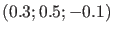 and with parameter values 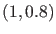 it is integrated over the time span 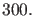 The endpoint is called 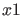 and from this point another time integration over the shorter span 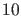 is performed. It is then checked graphically that this new integration contains a closed circle, see Figure 10 for a plot in a two-dimensional space.
The call
[x0,v0]=initOrbLC(@adaptx,t,y,p,ap,20,4,tolerance);now initializes the continuation of limit cycles. Here 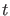 is a column vector whose entries are the time points (between 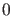 and ) and 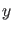 is a matrix whose rows contain the coordinates of the points computed along the orbit. Also, 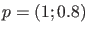 is the parameter vector and 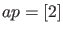 contains the indices of the free parameters, so in this case the second parameter is free. Also, the number of test functions is and the number of collocation points in the discretization of the limit cycle is 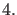 Finally, the tolerance is a threshold for accepting an initial part of the computed orbit as an approximation to a limit cycle.
The last command plots the continuation of a branch of limit cycles with  computed limit cycles
in the state space, see Figure 11 (the axis labels were added manually).
computed limit cycles
in the state space, see Figure 11 (the axis labels were added manually).
Note: when the lines
%opt=contset(opt,'TSearchOrder',0); %opt=contset(opt,'Backward',1);in testselectcycle are made active, then the initialization of the continuation of limit cycles involves a decreasing order of the unit vectors in continuation space instead of an increasing order. This accidentally leads to a continuation in the opposite direction; therefore cds.options.Backward is set to reverse the continuation.